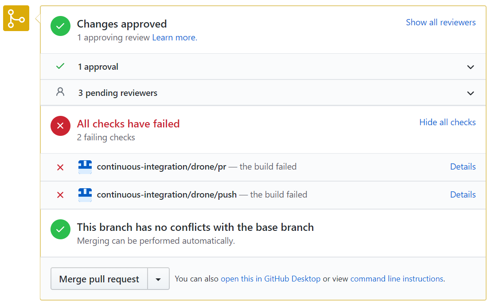

## Putting the Security in SecDevOps "Using pipelines, automation and agile practices improve cybersecurity." **- or -** ***"How I learned to stop worrying and love Pull Requests"*** Presented by: - Edward Delaporte, Technology Services - David Riddle, Technology Services - Michelle Pitcel, Technology Services - Zachary Carrington, Technology Services - Tyler Turner, Technology Services ??? Expectations: - This will be a whirlwind tour of tools you can try. We will walk through a high level overview of the ways a DevOps pipeline can make your work day better and while making your products secure - even if the product is from a vendor! Track: Cloudy with a Chance of Terraforming 2:30 - 3:15 pm - Zoom Room D - https://www.itproforum.illinois.edu/sessions --- ## About my Team The Cybersecurity Development and Assurance team will help software development and operations teams across the University protect servers from cyber-threats and other disruptions. Keep an eye out for us to provide: - training events - open source recipes, scripts and playbooks Please also use us when you need a SecDevOps perspective toward solving a problem. (securitysupport@illinois.edu) --- ## A Vision for **Sec**DevOps Just add "Sec" to the beginning of everything and call it a day. --- ## Questions? --- ## A Vision for **Sec**DevOps - The three virtues: Laziness, Impatience, Hubris - Enable Agility and Detective Work - Start by Gathering Feedback ??? Challenge: - Complex space. - Long wishlists. Today: - I want to shine a light on the widest path that leads to success. TRANSITION: That path is **automated feedback**. --- ## Routine Feedback Better Feedback drives Better Cybersecurity Outcomes ??? - Skimming the surface of this slide today. - Outcomes are in the lower right... - The theme in the lower left is "confidence (hubris)". - The theme of the top half is "laziness" - It's all about the backlog. TRANSITION: What does routine feedback look like in technology? --- ### Routine Feedback through CI/CD Pipelines A GitHub "Pull Request" can automatically gather and present feedback:  ??? Get your code changes and their impacts sit side-by-side. Even if there are no code changes - just config or a deployment, this pattern still works. You can automated feedback for: - Code Test Coverage - API compatibility (Integration Tests) - Known Regressions (prevent past bugs) - Cybersecurity posture (static code scan, external scan) ??? Caffeine break conversations: - TODO lists - Journals - Collaboration Tools My admission: GitHub Story: "I voted for a competing tool. I was wrong." TRANSITION: Where can I get GitHub? --- ## GitHub Enterprise Shared Service - Email the Shared Service team: githubsupport@uillinois.edu - Website: https://github.uillinois.edu ??? - Per the website: Full Rollout for IT Professionals is happening Summer 2020 TRANSITION: So what does a CI/CD pipeline look like? --- ### Automation with Drone CI / CD Example `.drone.yml` file: ```YAML pipeline: build: image: python:2.7 commands: - apt-get update && apt-get install -y build-essential python2.7-dev libldap2-dev libsasl2-dev - export DOCKER_RUN="bash -c" - export PYTHONPATH="$PWD/lib/cites/jira:$PWD/lib/cites/opia" - pip install -r requirements.txt - $(DOCKER_RUN) 'pytest tests/unit' - $(DOCKER_RUN) 'flake8' ``` ??? - ADMISSION: Not using GitHub Actions yet. Looking forward to trying. - supports any command line task - `pytest` - `flake8` - Your commands may vary. - DO test vendor products - integration testing TRANSITION: More on unit testing. --- #### Automated Unit Testing Pro - ***Fast***. - Runs anywhere. - Answers "What did we expect?" - The easiest regression tests are unit tests. Con - Hard to add to Legacy Code - Doesn't answer "Why did we do that?" - Many **regressions** cannot be unit tested without a refactor. ??? - Define **Regression** - We care about regressions because they are how we prevent repeat bugs. - Vulnerabilities in the wild are often repeat bugs. TRANSITION: Visual on Unit Testing --- #### Automated Unit Testing <img class='stretch' src='img/itpro2020spring/UnitTestDiagram.PNG'/> ??? TRANSITION: But I cannot write unit tests for a vendor product. TRANSITION: How is integration testing different? --- #### Automated Integration Testing <img class='stretch' src='img/itpro2020spring/IntegrationTestDiagram.PNG'/> ??? - Blue Box == live test server - Docker-compose or Terraform or Ansible can help TRANSITION: Pros and Cons of Integration Testing --- #### Automated Integration Testing Pro - Catches problems that cross areas. - The best regression tests are integration tests. Con - Depends on external services, configuration, uptime. - Calls need to be idempotent (repeatable / read-only). Tools - API Integration Testing: [Newman with Postman][11] - Web Interface Integration Testing: [RobotFramework with Selenium][12] ??? - Why integration test? - Catches what you didn't even think to test for. - Regressions are much easier to build in integration tests. - Three major categories: Web, API, Mobile TRANSITION: API testing with Newman --- #### Automated API Integration Testing Newman Example ```powershell $ newman run mycollection.json -d data.json ``` ```powershell → Status Code Test GET https://echo.getpostman.com/status/404 [404 Not Found, 534B, 1551ms] 1\. response code is 200 ... # failure detail 1\. AssertionFai… response code is 200 at assertion:1 in test-script inside "Status Code Test" of "Example Collection with Failing Tests" ``` ??? - PostMan is an IDE for crafting API tests. - Newman is the command line runner. - mycollection.json can be created with PostMan TRANSITION: Let's take a peek at PostMan --- #### Automated API Integration - Writing the Test Suite Build the API test collection with PostMan ??? - Link to learn PostMan at the end of the slide deck. Recipe: - Experiment with a Swagger file (or curl) - Copy your successes into PostMan - Refactor the PostMan suite into "Arrange, Act, Assert" pattern. TRANSITION: What about web interfaces? --- #### Authoring Automated Web Interface Integration Tests - [Selenium with RoboFramework][12] - [Selenium for RobotFramework][22] Example `Test.robot` file: ```robot Library Dialogs Library SeleniumLibrary *** Keywords *** Fill In Form Input Text mondayTimesheetHourValue 8 clear=false Input Text tuesdayTimesheetHourValue 8 clear=false Input Text wednesdayTimesheetHourValue 8 clear=false Input Text thursdayTimesheetHourValue 8 clear=false Input Text fridayTimesheetHourValue 8 clear=false Execute Manual Step Please Confirm or Correct Values then press Pass Click Element //input[@name="btnSubmit"] Page Should contain You have successfully submitted your time ``` [22]: https://robotframework.org/SeleniumLibrary/SeleniumLibrary.html ??? - Script is a bit longer than what you see here - to fit the slide. - Needed an example that we could all relate to. - Positive Time Reporting - I picked a tool that most of us can access - and that we all want to make sure it is up and running. - Link is in the slides - the goal here is to learn the tool. TRANSITION: Example output --- #### Automated Web Interface Integration Test Output Test.robot example output: ```powershell ============================================================================== ReportTime :: Assists users in quickly filling out and verifying their PTR ... ============================================================================== User gets PTR up to date by filling in any cards ------------------------------------------------------------------------------ 1 critical test, 1 passed, 0 failed 1 test total, 1 passed, 0 failed ============================================================================== Output: C:\src\RobotFramework\output.xml Report: C:\src\RobotFramework\report.html ``` ??? TRANSITION: Let's talk about how it all fits together. --- #### A Large Example CI / CD Solution <img class='stretch' src='img/itpro2020spring/CICDAll.PNG'/> ??? TRANSITION: What can you do next? --- #### Recommended Tools - [PostMan][10] - [NewMan][11] for PostMan command line. - [University of Illinois System Shared GitHub Service][13] - [Docker](https://www.docker.com/why-docker) - [RobotFramework][12] - [Ansible](https://www.ansible.com/) #### Source Code I Stole From - [RobotFramework Trivial Example Script](https://github.com/edthedev/Learn_RobotFramework_IllinoisPTR) - [An Python Microservice on Docker][3] - [PowerShell client for Accessing DMI Data][1] - [PowerShell client for Contacts Database][2] [3]: https://github.com/techservicesillinois/secdev-quarantinenetwork [1]: https://github.com/techservicesillinois/SecOps-PowerShell-DMI [2]: https://github.com/techservicesillinois/SecOps-PowerShell-CDB [10]: https://www.postman.com [11]: https://github.com/postmanlabs/newman [12]: https://robotframework.org/ [13]: https://web.uillinois.edu/github ??? - Kudos and thanks to everyone who has worked on the shared GitHub service! - Mostly talking about vaporware and dreams today, but that will change. - We have done SOME things already. --- ## Cybersecurity Liaisons Group Join the Security and Privacy Liaison Community and connect with your colleagues. Monthly online meetings: First Thursday of the month at 9:30am. Mailing List: ps-techliaisons@lists.illinois.edu Microsoft Teams: Security & Privacy Liaison Community U of I Box Folder: Security and Privacy Liaison Community: (Mailing list members will be granted access. Otherwise send email to sthomp@illinois.edu to be added.) ??? - this is a new extension of the former program. - Anyone is welcome to join - benefit from the shared expertise available in the community. --- ## Q & A --- ## Bonus Slides Start Here --- ### More Next Steps - Consider joining the Cybersecurity Liaisons Group - [Request GitHub Enterprise][13] - [Try creating a Pull Request](https://help.github.com/en/github/collaborating-with-issues-and-pull-requests/creating-a-pull-request) - [Try Postman][10] - [Try Newman][11] - [Try RobotFramework](https://github.com/edthedev/Learn_RobotFramework_IllinoisPTR) --- ### Resources - [Software Carpentry Git Traininig](https://swcarpentry.github.io/git-novice/) - Diagrams were created in [Archi - Open Format](https://www.archimatetool.com/download/). See `SecOps.archimate` file for diagram source. Image was done via Snipping tool. --- ## Bonus Slide: Why not basic auth? - Not terrific from a security perspective. Tends to carry a secret is good for a lot more than it needs to be good for. - Tends to get stale - doesn't come with great ways to rotate the keys. You could bolt this on. - Most importantly, the tech underneath is doesn't auto-update when security techniques move on. - Doesn't carry additional information like claims. - Doesn't integrate great with the tooling you might not know you want yet. i.e. API gateway integrations. --- ### Bonus Slide: When a cybersecurity geek reads "The Agile Manifesto": - Individuals and interactions over ~~processes and tools~~ **automated cybersecurity scan emails**. - Working **and secure** software over comprehensive documentation. - Customer collaboration over ~~contract~~ **bug priority** negotiation. - Responding to ~~change~~ **zero day patches** over following a plan. ***(This is tongue-in-cheek: I don't actually think the Agile Manifesto needed fixing.)***